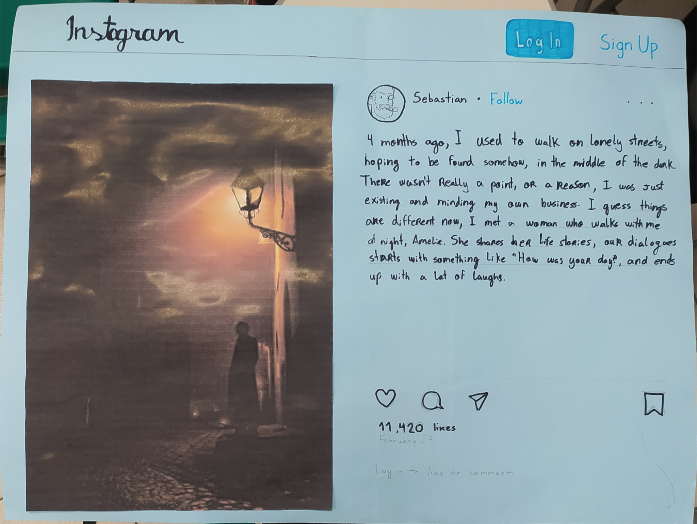

Linguagens
Simple Past
Com essa atividade aprendemos a expressar ações e eventos que ocorreram em um tempo passado específico, achei essa atividade querida.

Pré-modernismo
Essa atividade nos ajudou a compreender as raízes e as influências que deram origem a literatura brasileira, mostrando as transições culturais, sociais e estilísticas que antecedem o modernismo, essa atividdade foi muito interssante de se fazer, ja que pesquisar e ir atras é uma ótima forma de aprender.
Uma atividade
ainda não foi feita...